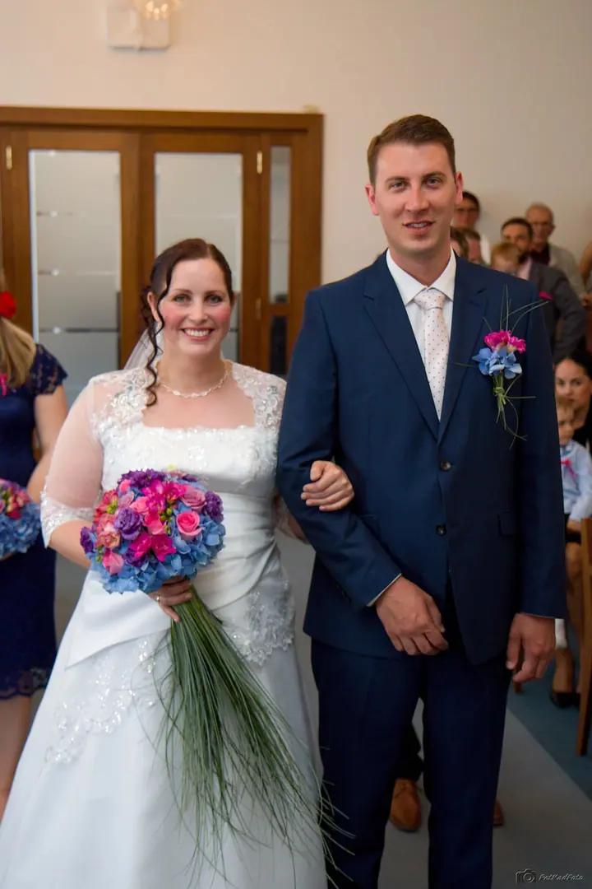
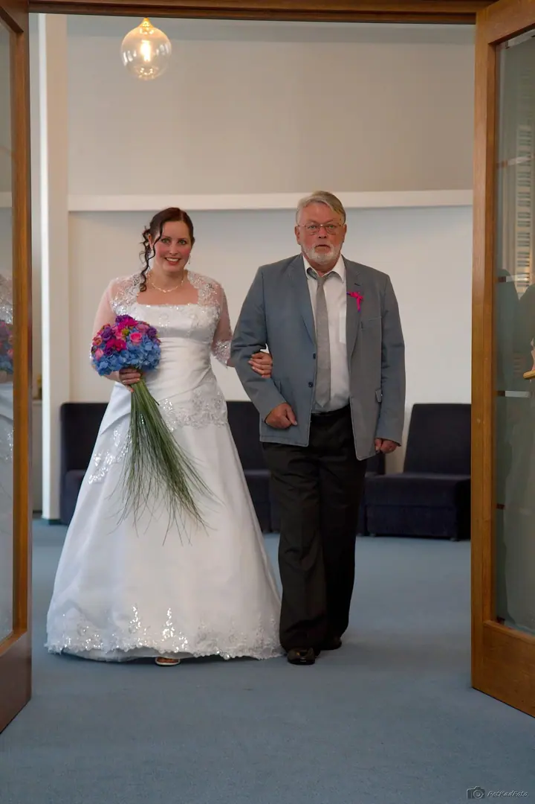
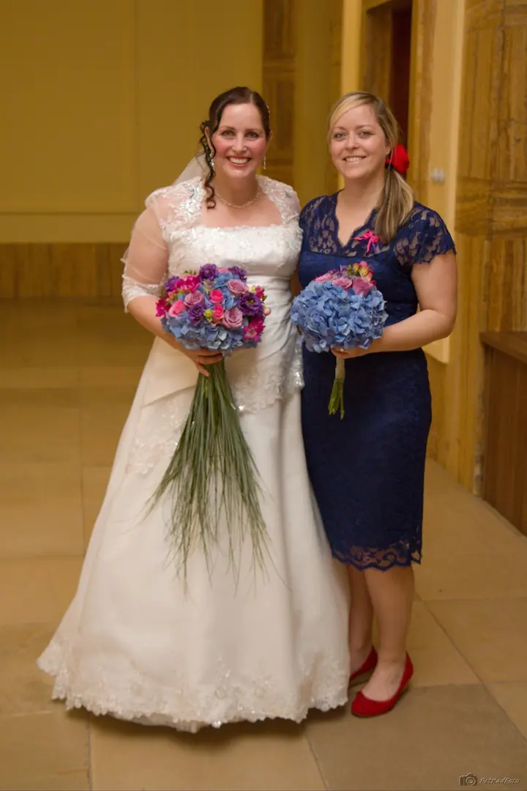
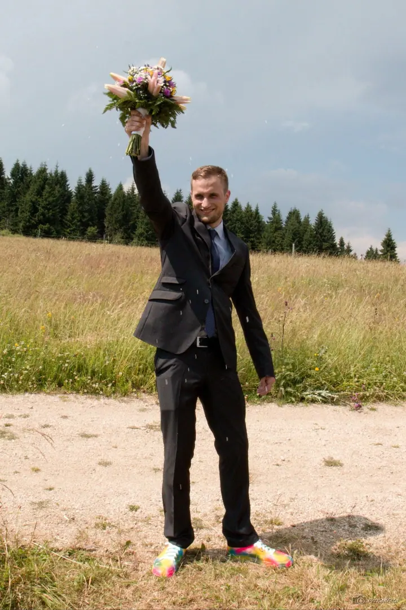

jedna
Celodenní svatby
Většinu svateb fotím celý den, od ranních příprav novomanželů přes obřad až po večerní oslavu do noci. Fotím i drobnosti, jako jsou prstýnky, vývazky nebo dort.


Jmenuji se Petr Kadlec, jsem mladý student a fotím pod značkou PetKadFoto. Nejraději fotím celé svatby, od ranních příprav přes obřad až po večerní oslavu.
Více o mně
Co fotím
jedna
Většinu svateb fotím celý den, od ranních příprav novomanželů přes obřad až po večerní oslavu do noci. Fotím i drobnosti, jako jsou prstýnky, vývazky nebo dort.
Fotím plesy, mikulášské a maškarní zábavy a další akce. Na webu mám třeba galerie z mysliveckých plesů a z akcí v Rádle.
Od ranních příprav až po večerní oslavu


Za objektivem
Jsem mladý student, který se věnuje focení. Pocházím z Rádla u Jablonce nad Nisou a mám za sebou už několik svateb. Většina z nich byla celodenních, od ranních příprav novomanželů přes obřad až po večerní oslavu do noci.
Na svatbě mě baví celý den, nejen obřad. Fotím líčení nevěsty, příchod k obřadu, výměnu prstýnků, polévku u svatební tabule i krájení dortu. A taky drobnosti, jako jsou vývazky nebo prstýnky v krabičce.
Kromě svateb fotím plesy a společenské akce, hlavně u nás v Rádle, a ve volném čase i sport a makro. V případě zájmu se mě nebojte kontaktovat.
Petr
Napište mi přes formulář nebo zavolejte. Domluvíme se, jestli mám na váš termín volno.
Projdeme spolu harmonogram svatby a domluvíme se, od kdy do kdy budu fotit a na čem vám nejvíc záleží.
Jsem s vámi od ranních příprav přes obřad až po večerní oslavu, podle toho, na čem se domluvíme.
Fotky vyberu a upravím a pošlu vám je v termínu, který si domluvíme předem.
Portfolio
Otázky
Svatební focení začíná na 3 000 Kč. Konečná cena záleží hlavně na tom, kolik hodin budu fotit, napište mi a pošlu vám nabídku přesně pro vaši svatbu.
Ano, většinu svateb fotím celodenně, od ranních příprav novomanželů přes obřad až po večerní oslavu do noci. Fotit můžu ale i jen část dne.
Jsem z Rádla u Jablonce nad Nisou. Jestli se berete jinde, napište mi a domluvíme se.
Ano, fotím i plesy a společenské akce. Na webu najdete například galerie z mysliveckých plesů, mikulášské nebo maškarního plesu v Rádle.